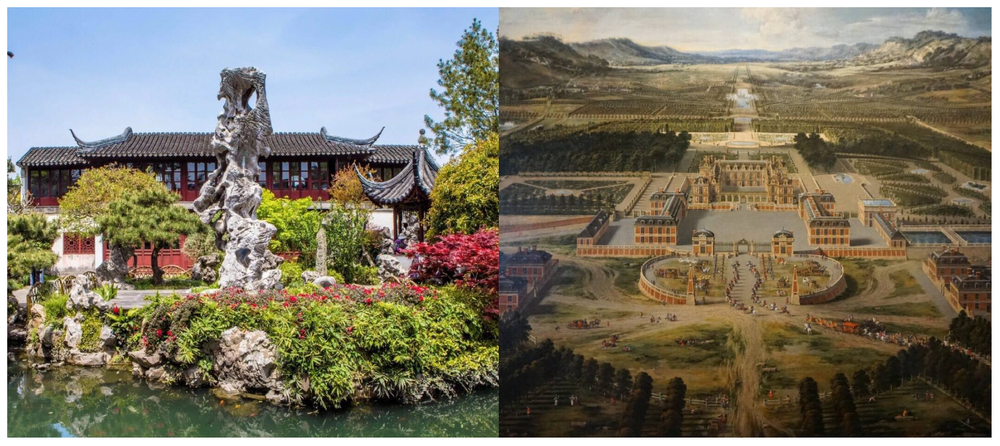

本网站为《中西方绘画与园林艺术赏析》课程期末作业。
中国古典园林以“虽由人作，宛自天开”为宗旨，园林是立体的山水画，追求写意、含蓄、曲径通幽。
西方古典园林依托透视绘画理论，以中轴线、几何花坛、修剪树木塑造秩序，彰显人对自然的理性掌控。

请点击上方导航栏
在【中国古典园林】与【西方古典园林】板块浏览古典园林典范。
在【中西对比赏析】板块拖动滑块对比中西方园林风貌。
在【发展时间轴】板块拖动时间轴纵览中外园林发展史。